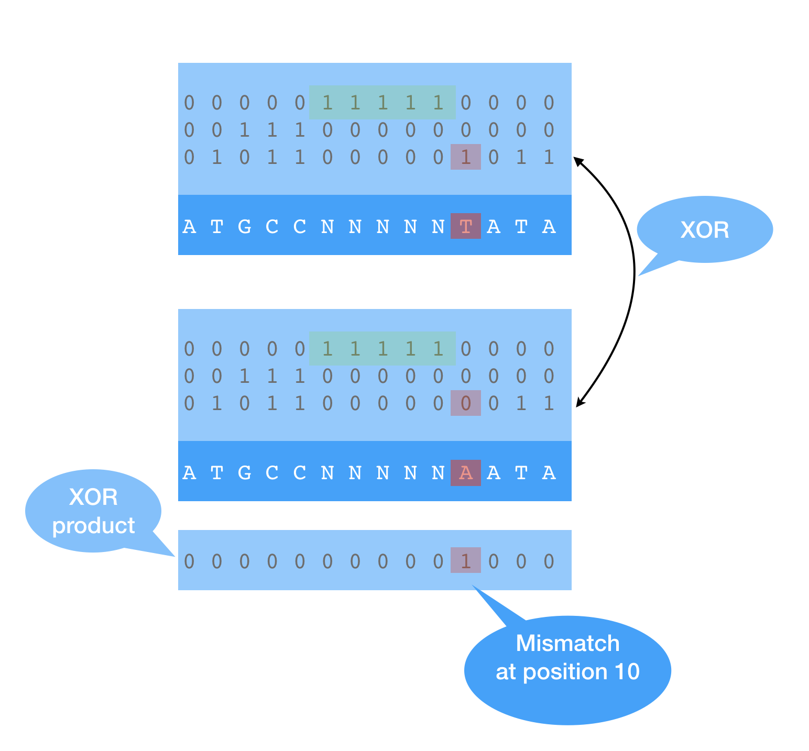
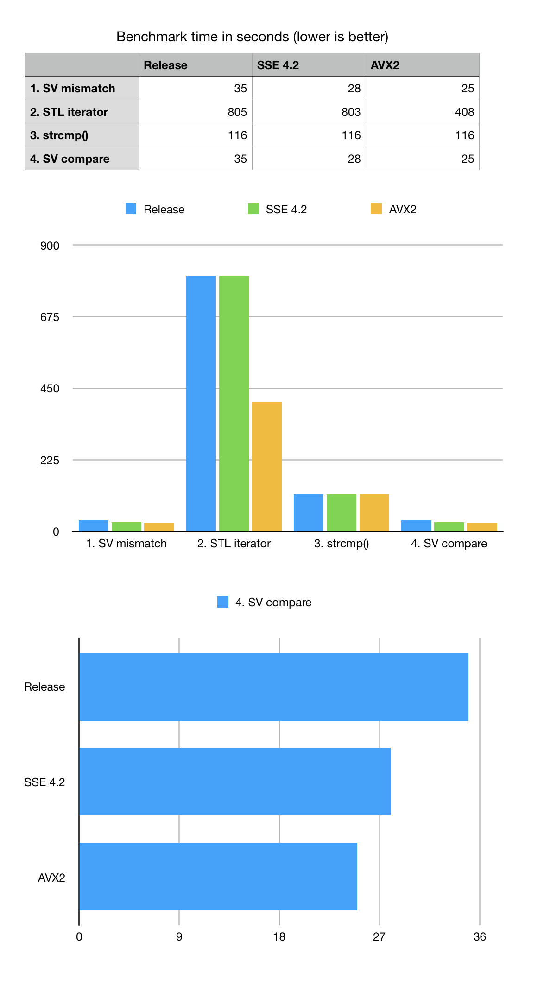

DNA comparison with bit-transposed sparse vector
Anatoliy Kuznetsov, Dec 8, 2019Introduction
This case illustrates use of BitMagic sparse_vector container for DNA sequences with memory efficient 2-bit encoding. Part of this use case is to show how to use BitMagic mismatch search algorithms based on bit-vector operations to build a lexicographical comparison function (potentially useful for Burrows-Wheeler Transform).
Bit-transposition for DNA strings

DNA alphabet usually consist of 4 letters: ‘A’, ‘T’, ‘G’ and ‘C’. It means we only need 2 bits to represent it all using numeric decimal codes: 0, 1, 2, 3 and its binary equivalents as 00, 01, 10, 11. Use of limited alphabet would allow us to pack 16 DNA letters per 32-bit integer.
For some applications though, it is required to extend the alphabet with some additional characters, very commonly ‘N’ (unknown base) and sometimes ‘$’ (Burrows Wheeler termination anchor). If we want to keep extra letters, we would need at least 3 bits per nucleotide, which would significantly lower our efficiency making it just 10 bp letters per nucleotide (with 2 bits per integer wasted).
This example tries a different approach, where we use 3 bits, but construct a
bit-transposed sparse vector, which would use 3-bit planes (for each bit index in
the code word). In this case letter ‘N’ would have binary code of 100. Specifics of
DNA sequencing is that Ns (unknowns) are either rare or form clear
blocks of ‘NNNNNNNNN…NNNNN’ substrings which make then convenient target for
GAP-RLE compression used in bm::bvector<>.
Bit-transposed ‘1’ of ‘100’ is going to land in a separate plain 3 of sparse vector
and compress there so on big cases our memory and storage footprint will remain close
to 2 bits per char.
Construct sparse vector with DNA mapping
Snippet of code on how to use BitMagic to construct a bit-transposed sparse vector.
#include "bm.h"
#include "bmsparsevec.h"
{
const char* s = "ATGTCNNNNNTATA";
svector_u32 sv;
{
svector_u32::back_insert_iterator bi = sv.get_back_inserter();
for (unsigned i = 0; s[i]; ++i)
{
bi = DNA2int(s[i]);
}
bi.flush();
}
sv.optimize(); // this will RLE compress the sparse (N) plane
}
Construction of compressed vector is not hard and we don't have to do it every time, sparse vector can be serialized and later restored (deserialization is fast).
Bit-sliced representation offers a challenge on how to construct an efficient comparison function. The proposed approach is to use pairwise XOR search between corresponding bit-plains. Logical operations are easy to vectorize (SSE4.2 and AVX2), so bit-plain based algorithm can be very efficient. We have to analyze all plains, but once at least one mismatch found we don’t have to do XOR search beyond it, so algorithm being O(N) has a property of search space reduction (this is data dependent). Sparse vector mismatch search can be used to construct a comparison function between long compressed strings. Once position of a mismatch is found, element comparison becomes trivial.

In order to benchmark this problem, we constructed a few variants of searching for mismatch using uncompressed vector of characters with STL iterators and also used C-language ‘strncmp’ function. All mismatch search and comparison algorithms have the same formal complexity of O(N) where N is a DNA string length. For this benchmark we generate a random DNA string of size 200M bps which approximately simulates to chr1 of human genome and add non-random block of Ns in the middle to simulate centromere.
List of mismatches is spread across the sequence and simulates the case when sequences are highly similar (basically the same sequence with an introduced single letter mutation).
Benchmark results show that XOR based bit-transposed algorithm wins both STL iterator based mismatch or strncmp() for the formally same big-O estimate. Despite the complexities related to bit-transposed representation used by BitMagic it pays off because of two factors: it uses less memory which means it does not need to analyze it on search (bandwidth optimization) and it is easy to vectorize (SSE4.2 and AVX2).
As we can see from the numbers that vectorization offers only modest advantage and this is happening because the SIMD compute kernel is relatively simple and remains memory bandwidth bound. We can see the use of succinct vector with compression reduced the memory wall, but only so much. The overall XOR based mismatch search algorithm remains memory bound thus does not show times advantage for vectorization.
A bit of unpleasant surprise is slow performance of STL iterator-based benchmark, which cannot be simply explained by memory bandwidth problem. My guess is there is a factor of unpredicted "ifs" in the code, memory aliasing, luck of register optimizations, etc. Benchmarking numbers suggest that GCC actually made a successful attempt to vectorize the STL vector iterators for AVX2 but the overall result is still not close to good old ‘strncmp’ or bit-vector based scan.
Notes on SIMD vectorization
In the interest of clarity let us review both portable and AVX2 vectorized versions of the same algorithm.
inline
bool bit_find_first_diff(const bm::word_t* blk1, const bm::word_t* blk2,
unsigned* pos)
{
for (unsigned i = 0; i < bm::set_block_size; ++i)
{
bm::word_t w1 = blk1[i]; bm::word_t w2 = blk2[i];
bm::word_t diff = w1 ^ w2;
if (diff)
{
unsigned idx = bm::bit_scan_forward32(diff); // trailing zeros
*pos = unsigned(idx + (i * 8u * sizeof(bm::word_t)));
return true;
}
} // for
return false;
}
inline
bool avx2_bit_find_first_diff(const __m256i* BMRESTRICT block1,
const __m256i* BMRESTRICT block2,
unsigned* pos)
{
unsigned BM_ALIGN32 simd_buf[8] BM_ALIGN32ATTR;
const __m256i* block1_end =
(const __m256i*)((bm::word_t*)(block1) + bm::set_block_size);
__m256i maskZ = _mm256_setzero_si256();
__m256i mA, mB;
unsigned simd_lane = 0;
do
{
mA = _mm256_xor_si256(_mm256_load_si256(block1), _mm256_load_si256(block2));
mB = _mm256_xor_si256(_mm256_load_si256(block1+1), _mm256_load_si256(block2+1));
__m256i mOR = _mm256_or_si256(mA, mB);
if (!_mm256_testz_si256(mOR, mOR)) // test 2x256 lanes
{
if (!_mm256_testz_si256(mA, mA))
{
// invert to fing (w != 0)
unsigned mask = ~_mm256_movemask_epi8(_mm256_cmpeq_epi32(mA, maskZ));
BM_ASSERT(mask);
int bsf = bm::bsf_asm32(mask); // find first !=0 (could use lzcnt())
_mm256_store_si256 ((__m256i*)simd_buf, mA);
unsigned widx = bsf >> 2; // (bsf / 4);
unsigned w = simd_buf[widx];
bsf = bm::bsf_asm32(w); // find first bit != 0
*pos = (simd_lane * 256) + (widx * 32) + bsf;
return true;
}
// invert to fing (w != 0)
unsigned mask = ~_mm256_movemask_epi8(_mm256_cmpeq_epi32(mB, maskZ));
BM_ASSERT(mask);
int bsf = bm::bsf_asm32(mask); // find first !=0 (could use lzcnt())
_mm256_store_si256 ((__m256i*)simd_buf, mB);
unsigned widx = bsf >> 2; // (bsf / 4);
unsigned w = simd_buf[widx];
bsf = bm::bsf_asm32(w); // find first bit != 0
*pos = ((++simd_lane) * 256) + (widx * 32) + bsf;
return true;
}
simd_lane+=2;
block1+=2; block2+=2;
} while (block1 < block1_end);
return false;
}
GitHub
Sources and build instructions are available at xsample06
Conclusions
- We should not blindly rely on Big-O estimates and ignore micro-architectural aspects like vectorization potential and bandwidth optimization. Memory wall is very real and often means that there is no trade-off between memory usage and performance, lower memory usage may mean faster performance.
- The biggest performance impact is often associated with memory bandwidth and not SIMD (especially light-weight integer SIMD for bitwise operations). Succinct and memory compression techniques can work remarkably faster than plain non-compressed cases despite the compression complexities
- BitMagic library is fast and conviniet. :-)